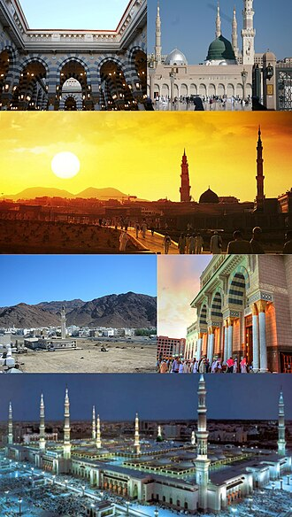
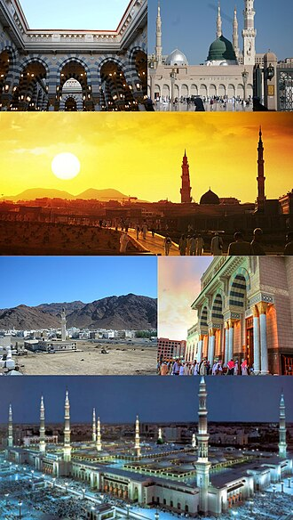

¿Qué fue la Hégira? |
- Mahoma comenzó a predicar el islam en La Meca, donde se enfrentó a una fuerte oposición por parte de los líderes qurayshíes, ya que su mensaje monoteísta amenazaba las creencias tradicionales y la economía basada en la idolatría.
- A medida que el acoso y la persecución contra él y sus seguidores aumentaban, Mahoma recibió una invitación de los habitantes de Yatrib (futura Medina), quienes buscaban un líder para resolver disputas internas y aceptaban su mensaje religioso.
- En secreto, Mahoma y sus seguidores comenzaron a emigrar. Él fue uno de los últimos en salir, y se escondió en una cueva durante unos días para evitar ser capturado por sus enemigos.
- Finalmente llegó a Medina, donde fue recibido con respeto y se convirtió en un líder tanto religioso como político.
|
Importancia de la Hégira |
- Marca el año 1 del calendario islámico (llamado calendario hijri, basado en la luna).
- Fue un punto de inflexión: el islam pasó de ser una religión perseguida a una comunidad organizada y creciente.
- Se fundó la primera comunidad islámica (la Umma), con una constitución que regulaba la convivencia entre musulmanes, judíos y otras tribus.
|
Vida en Medina y organizacion de la comunidad musulmana | La vida en Medina durante los primeros años del Islam, especialmente tras la Hégira (622 d.C.),
estuvo marcada por una organización social, política y religiosa profundamente transformadora bajo el liderazgo del profeta Mahoma. Aquí te explico cómo se organizó la comunidad musulmana en esa época:
- Fundación de la Umma (comunidad musulmana)
- Mahoma unificó a los habitantes de Medina —tanto musulmanes como judíos y tribus árabes— bajo un nuevo modelo de comunidad basada no en lazos tribales, sino en la fe común.
- Esta comunidad se conoció como la Umma, y por primera vez, la identidad religiosa comenzó a tener prioridad sobre la identidad tribal.
- Constitución de Medina
- Fue un documento clave que estableció las bases de convivencia entre los diferentes grupos de Medina.Incluía:
- Reconocimiento de Mahoma como líder político y religioso.
- Pactos de defensa mutua entre musulmanes y otras tribus (judíos incluidos).
- Normas de justicia y resolución de conflictos.
- Libertad de religión para los judíos, siempre que respetaran la autoridad del nuevo orden.
- Estructura política y religiosa
- Mahoma actuó como:
- Profeta y guía espiritual.
- Juez y legislador.
- Líder militar y político.
- Organización social
- Los lazos comunitarios se reforzaban a través de la solidaridad, la zakat (limosna obligatoria), y la cooperación entre musulmanes.
- hermandad (muʾākhāt) entre los emigrantes (muhājirūn) y los habitantes de Medina (ansār) fue esencial para la integración social y económica.
- Se promovieron valores como la justicia, la equidad y el apoyo mutuo.
|

 
